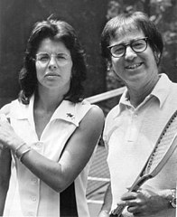

Biography
Billie Jean King was born November 22th, 1943 in California. In 1967, she became the top ranked women's tennis player in the US. She defeated Bobby Riggs on September 20th, 1973, in the famous "Battle of the Sexes". It had largest audience of all televised tennis matches in history. She won multiple wimbledon titles and retired in 1990. King was also an activist. She advocated for equal pay for both female and male athletes and later in her career, after outed by a lawsuit from a former assistant and partner, she became an advocate for LGBTQ rights. She served as director for the National AIDS fund and the Elton John AIDS Foundation.
"I wanted to use sports for social change" -Billie Jean King